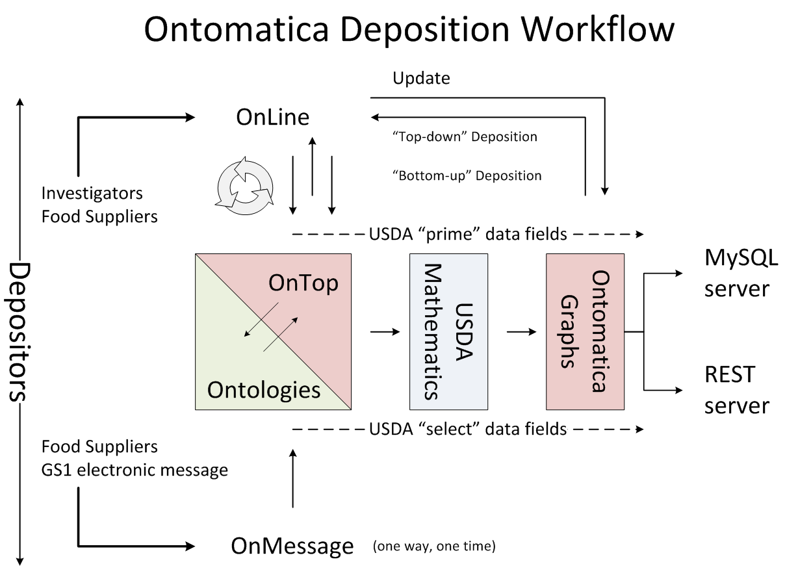
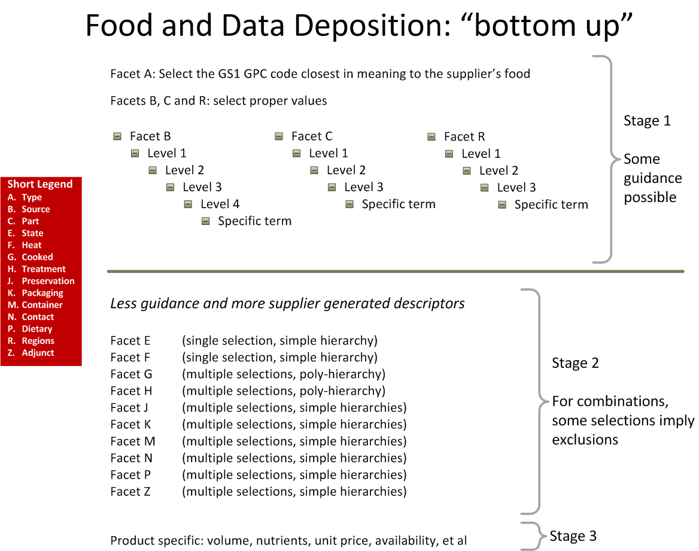

USDA Nutrition Database
Conventions Used in Proposal
Features - Core
Preview
Deliverables
Training and Support
Property Rights
Project Plan
Services, Products and Technologies
Examples: Production Applications
Generic Relationships
User Friendly Designs
Data Depository
Mathematics
REST Services and Reports
International Data and Methods
Information Harmonization
Data Integration
Satisfying Stakeholders’ Data Requirements
Real-time Infrastructure and Reporting
OnTarget Deployment Services
Non-composition Data
Governance
Features - Core with Detail
Chemicals
Commodities
Foods
Meals
Methods
Mathematics
Features - FDA Label Specifications
4-FDA-1
4-FDA-2
4-FDA-3
Features - Future
6-future-1
6-future-2
Glossary
Figures
Terms related to Project
Terms imported from Ontologies
Bibliographies
Articles - Food
Articles - Technology
Books
Web Resources
Ontomatica
Executive Summary
Ontomatica Expertise
Project Humor
USDA Nutrition Database
Docs
»
Figures
Figures
¶
This is the caption for the figure
¶

